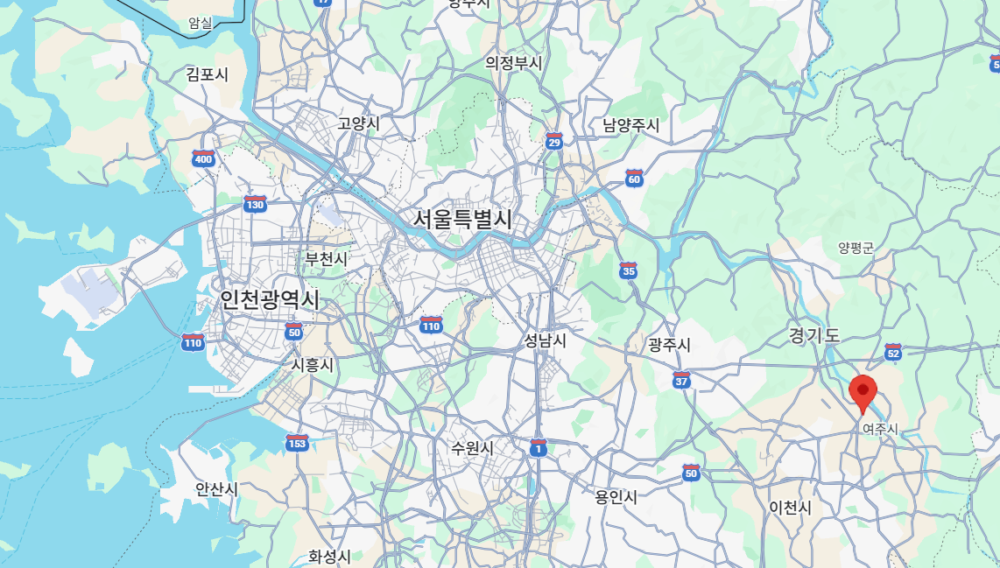

Address
경기도 여주시 왕대리 692-66
세종대왕릉(영릉) 인근
Directions
출발지에 따라 가장 빠른 경로를 선택하세요.
Nearby
한옥 스테이 인근의 여주 대표 명소들을 함께 즐겨보세요.
한글 창제 세종대왕과 왕비의 합장릉. 넓은 숲길과 힐링 산책 코스.
📍 차량 5~10분
남한강 절벽 위 사찰. 일몰과 강변 뷰가 아름다운 여주 명소.
📍 차량 15분
수도권 최대 규모의 프리미엄 아울렛. 가족 여행 코스 연계.
📍 차량 15분
남한강을 따라 이어지는 자연형 트레킹 & 자전거 코스.
📍 차량 10분
Reservation